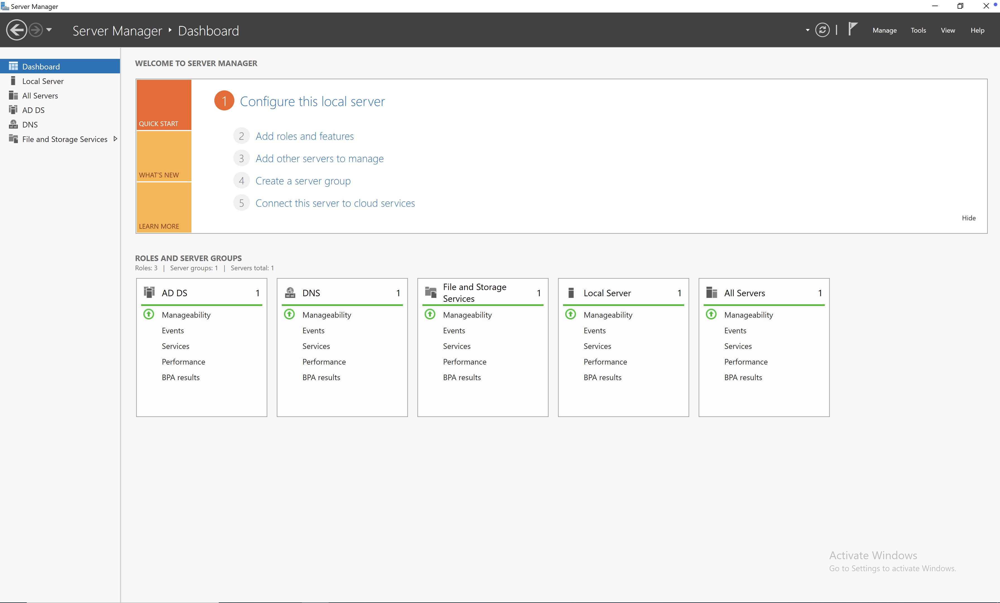
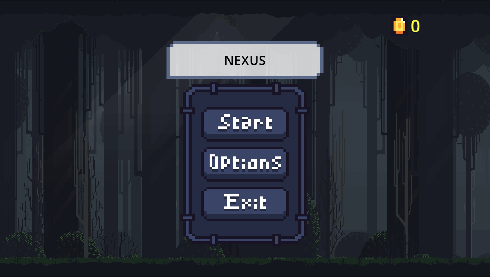

Introduction

Welcome to my personal website! Here you will learn more about my work, education, and to contact me. Connect with me on LinkedIn and check out my projects on GitHub.
Currently, I am a junior at CSUF, where I am pursuing a degree in Computer Science. My academic interests include software development, machine learning algorithms, and mathematics. I am eager to learn new technologies and apply them to solve real-world problems. Beyond academics, I enjoy staying active by going to the gym, playing chess, and spending time with friends and family.
Work Experience

Throught my years of customer service and sales, I have been able to develop the skill of effective communication and the ability to problem-solve in a work enviorment.
In my time working at 24 Hour Fitness, I have been put into an enviorment with daily quotas and long-term tasks that have made me confident in high pressure situations, comfortable collaborating with a team, and maintaining an organized workplace.
For more information on my experience working, you can view my resume.
School
Orange Coast College
I attended Orange Coast College (OCC) from 2022-2024, where I completed all my General Education requirements. During my time at OCC, I earned an Associates Degree in Computer Science and a C++ certificate, which laid a strong foundation for my programming skills.
California State University, Fullerton
In Fall of 2024, I transferred to California State University, Fullerton (CSUF), where I am currently pursuing a Bachelor's degree in Computer Science. At CSUF, I am focusing on learning more aspects of software development such as machine learning, cybersecurity, and project development/deployment. I am excited to continue my education and work on projects that will prepare me for a career utilizing my software skills.
Certificates
C++ Proficiency - Orange Coast College
Projects

Currently developing an application that allows users to log food items, track nutritional content, and view overall progress.
The app integrates Python for the backend, SQLite for data storage, and uses Svelte for the front-end, providing a unique user
experience for meal and nutrition tracking

Cloud Migration and Securing Hardening
Managed the migration of three virtual machines—Kali Linux, Windows Server 2022, and Metasploitable—to a secure cloud environment on Microsoft Azure.
This project gave me hands-on experience in risk assessment, OS hardening, leveraging cloud tools to enhance operational efficiency, and using Windows Server
2022 for Active Directory.

Nexus is an action-packed 2D side-scroller where players control Nix, a skilled warrior who has found himself in the Anuc region far from his homeland.
Navigate through challenging levels filled with dangerous monsters, intricate parkour sequences, and dynamic environments. As Nix, players must utilize patience,
pattern recognition, and timing in order to defeat enemies and uncover the forces holding him captive. Through the development process of Nexus, I gained valuable experience in game
design, problem-solving, and effectivly adapting to new IDEs and programming languages.